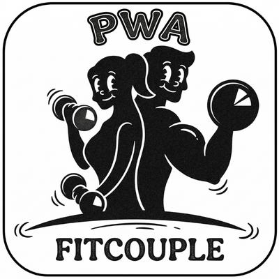

Reto abdominal, oblíquos, core profundo e estabilidade — com sobrecarga progressiva real.
Exercícios de prevenção e estabilidade — pulso, lombar, joelho, ombro e core profundo.
Zonas de frequência cardíaca + programas progressivos de 12 semanas com métodos contínuo, intervalado e longo.